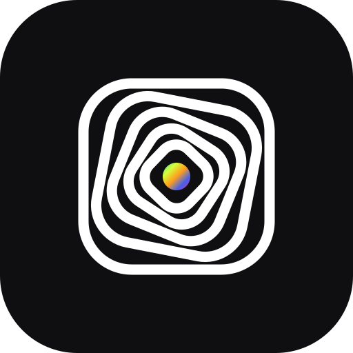
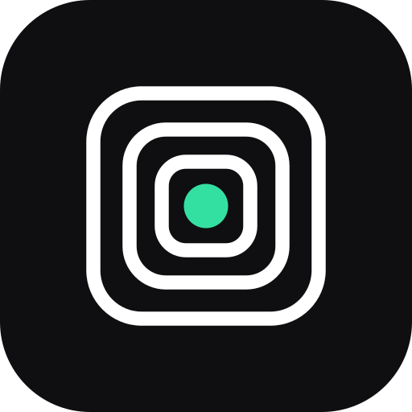
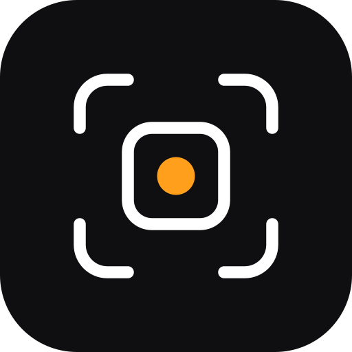
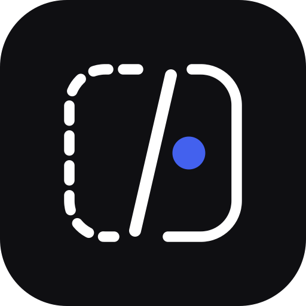
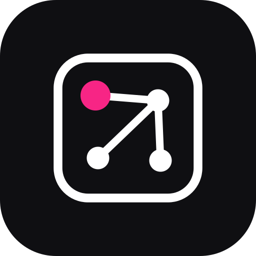

Fruti Squad · paquete de marca
Seis especialistas, un mismo idioma: marcos redondeados y un punto, la evidencia que cada agente produce y entrega. El trazo es neutro; el punto lleva el color de quien lo firma. Para Codex, Kiro y Claude Code.
Símbolos · claro
Símbolos · oscuro

Una tinta · app icons





Logotipos de producto
Color · vivo (oscuro) y claro
Kiwi
#34e0a1 · #0f9e6eLima
#d4ff3a · #6f8c00Coco
#ff9f1c · #c26a00Bruno
#4361ee · #3a54d6Mora
#f72585 · #d0156eReglas
- El trazo siempre es neutro (tinta en claro, blanco en oscuro); el color vive solo en el punto.
- Cada integrante firma su evidencia con su color; el orquestador reúne los cinco en degradado.
- En fondo claro se usan los tonos oscurecidos (color_claro); los vivos solo sobre oscuro.
- El color nunca es la única señal: cada integrante se reconoce por su silueta.
- Las plataformas (Codex, Kiro, Claude Code) se nombran en texto; nunca sus logotipos dentro de la marca.